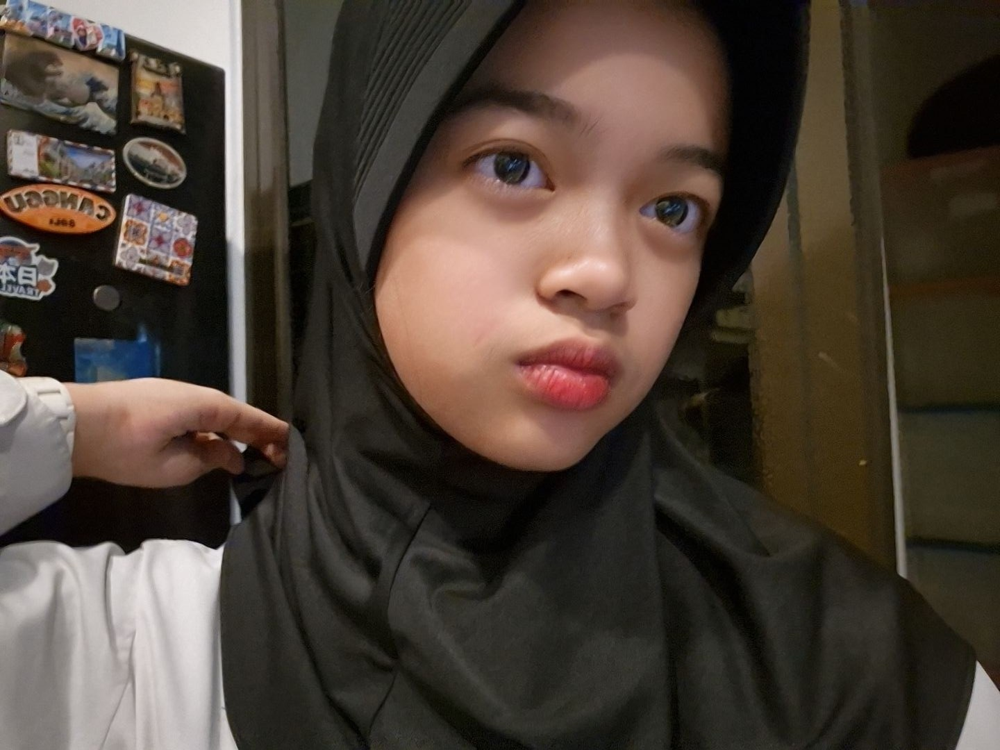

Kerja Nyata dari Proses Belajar

Nama aku Cherish Ileesya Veeta, biasa dipanggil Cece atau Cherish. Saat ini aku menduduki bangku kelas 9 di SMPIT Al Haraki.
Aku dikenal sebagai anak yang ramah dan baik. Aku senang menghabiskan waktu bersama teman-teman dan berusaha menciptakan suasana yang nyaman. Beberapa hal yang cukup melekat pada diri aku adalah hal-hal sederhana yang aku sukai, seperti karakter Shinchan atau hal-hal bertema cherry, yang membuat teman-teman aku sering teringat aku melalui hal tersebut
Saya memiliki minat di bidang ilmu ekonomi. Saya tertarik mempelajari ekonomi karena saya ingin belajar bagaimana cara mengelola sesuatu dengan baik, terutama dalam hal keuangan dan pengambilan keputusan.
Saya tipe orang yang cukup mempertimbangkan banyak hal sebelum bertindak, jadi saya merasa ilmu ekonomi cocok dengan cara pemikiran saya. Saya juga memiliki bakat dalam mendengarkan pendapat orang lain dan selalu ingin belajar menjadi lebih baik.
Untuk saat ini, cita cita saya adalah untuk menjadi pengusaha sukses. Saat selesai SMA nanti, saya ingin melanjutkan pendidikan di UI jurusan ilmu ekonomi. Harapan saya, semoga nanti saat mengikuti seleksi ptn, saya dapat diterima di Universitas Indonesia dan di masa depan saya bisa menjadi pengusaha yang sukses serta bermanfaat bagi banyak orang.
Selama berada di kelas 9 SMPIT Al Haraki ini, saya merasa sangat senang karena saya lebih percaya diri dan mendapat banyak teman baru. Saya juga mendapat banyak pengalaman baru selama di Al Haraki ini karena kegiatan kegiatan yang telah dilaksanakan. Walau di kelas 9 ini saya sering merasa lelah dan kewalahan karena banyaknya ujian dan tugas, tetapi saya tetap berusaha untuk menikmati setiap proses yang saya jalani